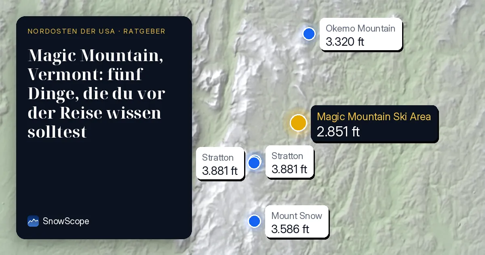
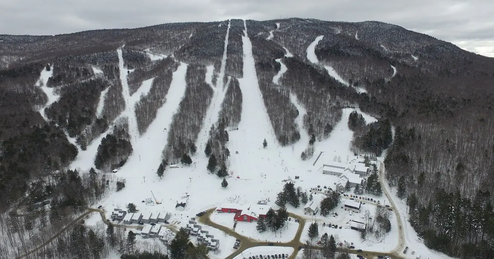

Magic Mountain, Vermont: fünf Dinge, die du vor der Reise wissen solltest
Magic Mountain ist das Skigebiet, das Menschen mit Zuneigung beschreiben, nicht mit Statistiken: unabhängig, steil für seine Größe und stolz darauf. Es liegt in Londonderry im südlichen Vermont.
Die Live-Schneeprognose für Magic Mountain Ski Area in der SnowScope-AppSchneehöhen, Pulverschnee-Alarme und 3D-Karte, gratis.

1. Naturschnee ist hier dünn, also folge den Stürmen
Südvermont ist keine tiefschneeige Region. An der Spitze des Berges, 2.851 ft (869 m), beträgt der übliche Saisonhöchststand nur etwa 26 in (67 cm), an der Basis, 1.378 ft (420 m), etwa 21 in (54 cm). Die Winter schwanken stark: Der dünnste in unserem Datensatz erreichte etwa 6 in (14 cm), der tiefste an der Spitze etwa 46 in (116 cm). Schneemaking deckt etwa die Hälfte des Geländes ab, daher funktionieren die präparierten Pisten häufiger als diese Zahlen vermuten lassen; für die Wälder brauchst du Naturschnee.
Der beste Plan ist, in den Tagen direkt nach einem guten Sturm zu kommen. Dieses Timing ist bei Magic Mountain wichtiger als bei großen Resorts mit mehr Schneekanonen und Gelände. Wenn Naturschnee fällt, macht er den Unterschied zwischen einem guten und einem großartigen Tag, besonders in den Glades, wo der Schnee im Schatten länger haftet.

2. Die steilen Glades sind der Grund
Magic Mountain hat das umfangreichste Waldskigebiet im südlichen Vermont mit Hängen von bis zu 45 Grad auf einem vertikalen Drop von etwa 1.500 ft von einer Basis auf 1.350 ft bis zum Gipfel auf 2.850 ft. Es gibt 39 Pisten auf 205 acres. Für sichere Skifahrer ist das die Attraktion; für Anfänger gibt es hier weniger als bei den großen nahegelegenen Resorts, also wähle Lektionen und einfache Pisten sorgfältig.
Die Glades belohnen dich mit Windschutz und weicherem Schnee, der im Frühling länger haftet. An Tagen mit wenig Schnee können die offenen Pisten hart ausgefahren sein, aber die Wälder bleiben spielbar. Deshalb kommen erfahrene Skifahrer immer wieder zurück.
3. Dezember ist riskant; Februar und März sind ideal
An der Spitze hat ein typischer Winter etwa 6 in (14 cm) im Dezember, 11 in (28 cm) im Januar und etwa 17 in (43 cm) im Februar, dann etwa 17 in (42 cm) im März. Dezembertrips hängen von Schneemaking und kalten Nächten ab; es gibt wenig Puffer, wenn das Wetter wärmer wird. An der Basis sind die Zahlen noch knapper: nur 1 in (1 cm) ist typisch im November, 2 bis 11 in (2 bis 11 cm) im Dezember.
Februar und früher März geben den Wäldern ihre beste Chance. Die beste einzelne Woche in unserem Datensatz, anfang März, hat mindestens 20 in (50 cm) an der Spitze in der Hälfte aller Winter. Zum Ausgang des Winters hat die Basis 2 bis 31 in (2 bis 31 cm) aufgebaut, und die Spitze liegt oft über 50 in (127 cm). Das ist, wenn du deine Reise buchen solltest.
4. Fahre mindestens einmal mit dem Red Chair
Der Red Chair ist ein 1971 gebautes Festsatteldoppelliftseil, langsam und ein wenig kalt, und Teil der Identität des Berges. Seit 2020 bietet die Black Line Quad einen zweiten Weg nach oben. An einem kalten, windigen Tag, kleide dich für eine lange Fahrt: Ein Gesichtsschutz und warme Handschuhe machen einen großen Unterschied.
Wind ist wichtiger als das Thermometer auf der exponierten Seite des Berges. Ein Halstuch oder eine Balaklava und ein Helm, der deine Ohren bedeckt, schützen deine Haut. Packe chemische Wärmequellen und Ersatzhandschuhe in einen kleinen Rucksack; nasse Handschuhe frieren auf dem Lift, und ein trockenes Paar zum Mittagessen macht den Nachmittag möglich.
5. Der Schnee hier ist stabil geblieben
Der Schweizer Skilehrer und Filmemacher Hans Thorner gründete das Gebiet, weil das Gelände ihn an die Alpen in seiner Heimat erinnerte. Der Berg schloss 1991, öffnete 1997 wieder und kämpfte durch mehrere Besitzer, bis Ski Magic LLC ihn Ende Dezember 2016 wieder öffnete. Kleine Berge wie dieser überleben von ihren Stammgästen und ihrem steilen Gelände.
In unserem Datensatz ist der Schnee nicht zurückgegangen. Der Medianwert an der Spitze war in unseren ersten 15 Wintern etwa 21 in (54 cm) und in den letzten 15 etwa 25 in (63 cm). Letzter Winter, 2025-26, war etwa normal mit etwa 26 in (66 cm). Diese Stabilität ist selten in Südneuengland und spricht für die Lage des Berges in den Green Mountains.
Was du für Magic Mountain packen solltest
Dünne, schnell trocknende Basisschichten (Wolle oder Synthetik, niemals Baumwolle) halten dich tagsüber trocken und regulieren die Wärme auf dem Lift. Eine warme Mittellage und eine winddichte Schale speichern Wärme und blockieren den Wind, der wichtiger ist als das Thermometer. Schichten ermöglichen es dir, dich auf der langen Abfahrt zu öffnen und dich auf dem Lift wieder zu schließen.
Bring eine Brille mit einem Glas für schwaches Licht mit; graue Tage sind in Vermont häufig. Ein zweites Glas oder eine Sonnenbrille hilft an hellen Frühjahrstagen. Lass deine Kanten vor der Reise schleifen oder leih Skier, die kürzlich gewartet wurden. Mit einem dünneren Schneepack verwandelt ein Tauwetter und anschließend Frost die Oberfläche schnell zu Eis, und scharfe Kanten machen den Unterschied zwischen Kontrolle und Rutschen.
Tipps für Skifahrer
- Komm in den Tagen direkt nach einem guten Sturm, besonders für die Glades. Naturschnee ist hier dünn und schmilzt schnell.
- Buche deine Reise für Februar oder anfang März. Der Dezember hängt von Schneemaking ab; später Winter geben den Wäldern die beste Chance.
- Kleid dich in Schichten und bring einen Gesichtsschutz, warme Handschuhe und chemische Wärmequellen mit. Wind am Red Chair kann heftig sein.
- Pack eine Brille für schwaches Licht und ein zweites Glas für helle Tage. Die Schneeoberfläche wird hart, wenn sie dünn ist.
- Überprüfe das offizielle Lawinenbulletin auf avalanche.org, bevor du off-piste gehst, und bestätige, dass das Resort am Tag deines geplanten Besuchs geöffnet ist.
Zu diesen Zahlen
Die Schneehöhen der Skigebiete sind der meiste Schnee in den oberen Hängen am angegebenen Tag; es sind Schätzungen für eine Fläche, keine Messung an einem Punkt. Prognosen können sich ändern. Lies vor dem Freeriden immer den offiziellen Lawinenlagebericht.
Offizielle Lawinenlageberichte: avalanche.org (US national portal)
Diesen Bericht zitieren
Für Forschung, Lehre oder Presse: Zahlen und Grafiken sind unter CC BY 4.0 mit dieser Quellenangabe frei nutzbar.
SnowScope (2026), Magic Mountain, Vermont: fünf Dinge, die du vor der Reise wissen solltest, https://snowscope.app/blog/de/2026/11/magic-mountain-vermont-five-things-before-you-go.html, abgerufen am 2026-11-09
SnowScope (Atlas Labs). (2026, November 9). Magic Mountain, Vermont: fünf Dinge, die du vor der Reise wissen solltest. SnowScope snow reports. https://snowscope.app/blog/de/2026/11/magic-mountain-vermont-five-things-before-you-go.html
BibTeX
@misc{snowscope2026magicmountainvermontfive,
author = {{SnowScope (Atlas Labs)}},
title = {Magic Mountain, Vermont: fünf Dinge, die du vor der Reise wissen solltest},
year = {2026},
month = nov,
howpublished = {\url{https://snowscope.app/blog/de/2026/11/magic-mountain-vermont-five-things-before-you-go.html}},
note = {Published 2026-11-09 16:24 UTC; accessed 2026-11-09}
}· CC BY 4.0 · Methoden, Daten und Werkzeuge →
Magic Mountain Ski Area: Schnee und Temperatur nach Höhe, dieser Winter vs letzter (Werkzeuge) →
Magic Mountain Ski Area folgen
Gratis: eine Nachricht, wenn Neuschnee kommt, und jeden Morgen die Vorhersage.